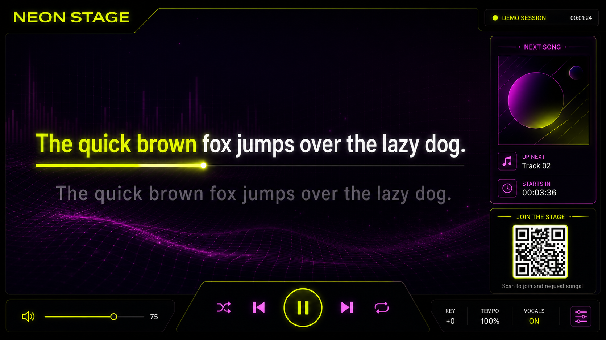
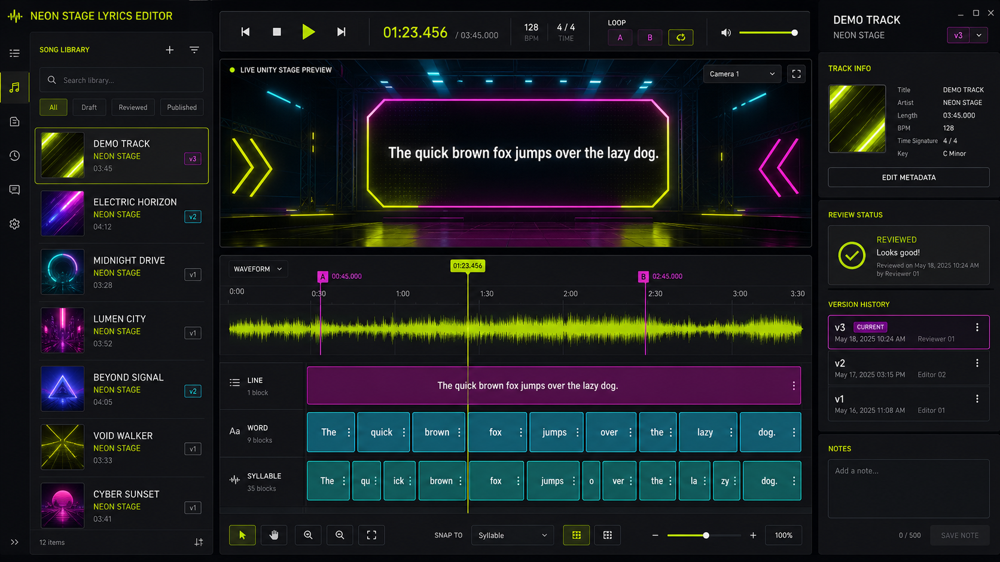

Scan & join
Scan the QR code, choose a name, and participate without installing an app.
LOCAL-FIRST · BUILT FOR THE BIG SCREEN
A karaoke platform designed like a game, not a media player. Guests scan, songs enter the queue, and the stage takes over.
ONE PARTY · ONE FLOW
Scan the QR code, choose a name, and participate without installing an app.
Search the library, request missing tracks, and shape the running order together.
Word-timed lyrics, separate stems, live reactions, and reactive visuals create the game feeling.
SEE IT IN ACTION
Real captures of the current Unity stage and Avalonia editor, recorded against an isolated synthetic demo library. The only lyric-like text is the standard pangram “The quick brown fox jumps over the lazy dog.” No real songs, lyrics, artists, or production library data are shown.


UNDER THE LIGHTS
Your server stays under your control. Phones connect over the local network, Unity renders the stage, and the optional CUDA pipeline turns lyrics into precise, reviewable timelines.
DEPLOY IN MINUTES
Keep the media library and SQLite state on the host while the ASP.NET Core server runs in a reproducible container.
cp .env.example .env
# set library path and Spotify credentials
docker compose up -d --build server
curl http://127.0.0.1:5274/api/healthKARAOKE_LIBRARY_PATH, SPOTIFY_CLIENT_ID, SPOTIFY_CLIENT_SECRET, and SPOTIFY_REDIRECT_URI are configured in the ignored .env file.
The self-contained x86_64 AppImage includes the editor runtime and LibVLC. Point it at any reachable Neon Stage server.
chmod +x NeonStage-LyricsEditor-x86_64.AppImage
KARAOKE_SERVER=http://SERVER:5274 \
./NeonStage-LyricsEditor-x86_64.AppImageGPU alignment and request downloading remain separate worker workloads, so credentials, models, and karaoke media never enter application releases.
BUILT ON OPEN SOURCE
Our heartfelt thanks go to the maintainers and contributors behind Avalonia, .NET, VideoLAN and LibVLCSharp, FFmpeg, QRCoder, TagLib#, SQLite, PyTorch, Hugging Face, Qwen, Whisper, stable-ts, Silero VAD, EasyAligner, SOFA, python-audio-separator, Ultimate Vocal Remover, LRCLIB, and every transitive project that keeps this stage alive.
Development disclosure: A large part of Neon Stage has been created through AI-assisted “vibe coding.” Product direction, requirements, testing, and acceptance remain human-led, while substantial implementation and documentation were developed collaboratively with AI coding tools.
Read all acknowledgements · Review licenses and third-party notices
THE NIGHT IS YOURS
Setup, containers, CLI workflows, client/server architecture, alignment internals, releases, and licensing are documented in the repository.
Read the documentation